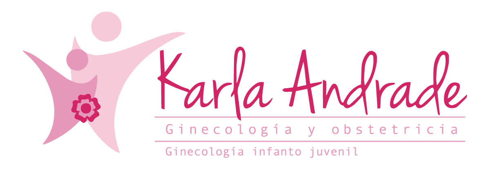

Ginecología y obstetricia
Seguimiento clínico para salud ginecológica, embarazo y bienestar reproductivo.

Agendar citaGinecología · Endocrinología · Obstetricia
Salud hormonal y bienestar femenino con una mirada cercana, integral y personalizada para cada etapa de la vida.
Atención para adolescentes, mujeres adultas, climaterio, menopausia y salud hormonal.
Ver especialidadesSobre mí
Soy ginecóloga, endocrinóloga y obstetra, con un enfoque funcional e integrativo en la salud hormonal y el bienestar femenino.
Mi vocación nace también desde mi propia experiencia como mujer, lo que me ha permitido comprender de forma más cercana las distintas etapas, cambios y necesidades que atravesamos a lo largo de la vida.
Acompaño a mujeres en cada etapa: adolescencia, juventud, embarazo, menopausia, postmenopausia y edad senil, brindando una atención personalizada basada en medicina funcional, evidencia y un abordaje humano que busca entender el origen de cada síntoma, no solo tratarlo.
Para mí, la actualización constante y la evidencia son fundamentales en la práctica médica. Por ello, he complementado mi formación con estudios en investigación en Harvard, integrando conocimiento científico con una atención cercana, empática y personalizada.
Creo en una medicina donde cada paciente se sienta escuchada, comprendida y segura durante todo su proceso, construyendo juntas un camino hacia una mejor salud y calidad de vida.
Atención personalizada

Seguimiento clínico para salud ginecológica, embarazo y bienestar reproductivo.
Evaluación hormonal y acompañamiento en condiciones endocrinas femeninas.
Consulta personalizada, empática y enfocada en decisiones informadas.
Especialidades
Contenido
Agendar cita
Lunes a viernes: de 9:00 a 15:00 · de 17:30 a 18:30
Sábados: de 9:00 a 13:00
Ubicación
Av. Mariana de Jesús OE7-02 y Nuño de Valderrama. Consultorio 533, piso 5.